Application layout guide
Overview
Shiny apps use Bootstrap, an extremely popular HTML/CSS framework, (though no prior experience with Bootstrap is necessary). As a result, the best way to customize the layout of a Shiny app is with R’s bslib package. This guide will teach you how to use bslib to build:
- Sidebars
- Multi-page apps that have a navigation bar
- Multi-page panels, like a tabset
- Accordions
- Multi-column apps that leverage a grid layout
For more information on any of these items, visit the bslib package site at the links above.
Multi-page apps
To add multiple pages to an app, change page_sidebar() to page_navbar() and use nav_panel() to supply the title and content for each page. Here you can also take advantage of bslib’s:
nav_spacer()nav_menu()nav_item()
to add items or menus to the navbar, and to control their alignment.
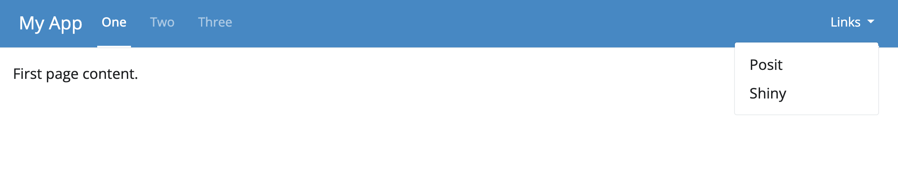
Here’s the code used to create this layout:
ui <- page_navbar(
title = "My App",
bg = "#2D89C8",
inverse = TRUE,
nav_panel(title = "One", p("First page content.")),
nav_panel(title = "Two", p("Second page content.")),
nav_panel(title = "Three", p("Third page content.")),
nav_spacer(),
nav_menu(
title = "Links",
align = "right",
nav_item(tags$a("Posit", href = "https://posit.co")),
nav_item(tags$a("Shiny", href = "https://shyr-test-center.netlify.app"))
)
)Be wary that page_navbar()’s sidebar argument puts the same sidebar on every page, which may or may not be desirable. Sometimes it is better that only particular pages have such a sidebar layout. To achieve this, use layout_sidebar() within the nav_panel()s that should have a sidebar.
Sometimes it is useful for an app to know which page is active. To make this information available, pass an optional id argument to the page_navbar(), e.g. page_navbar(id = "page", ...). The title of the active nav_panel() will be available in reactive contexts as input$<id>, e.g. input$page.
Additional Options
See the page_navbar() reference page for additional measures of customization.
Tabsets (Multi-page panels)
Multiple nav_panel()s don’t necessarily need to go directly into page_navbar(). They can also be consumed by any navset_*() component, including navset_card_underline(), which makes a streamlined tabset.
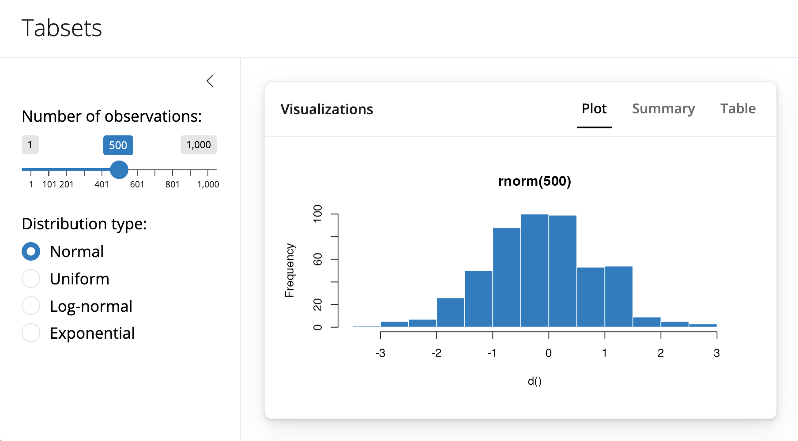
Here is the code that creates the above layout.
ui <- page_sidebar(
title = "Penguins dashboard",
sidebar = sidebar(
varSelectInput(
"color_by",
"Color by",
penguins[c("species", "island", "sex")],
selected = "species"
)
),
navset_card_underline(
title = "Histograms by species",
nav_panel("Bill Length", plotOutput("bill_length")),
nav_panel("Bill Depth", plotOutput("bill_depth")),
nav_panel("Body Mass", plotOutput("body_mass"))
)
)The bslib package provides many styles of navset_*() containers for combining panels, including:
navset_underline()andnavset_card_underline()navset_tab()andnavset_card_tab()navset_pill_list()navset_pill()andnavset_card_pill()navset_hidden()navset_bar()
Each allows the user to navigate the panels in a different way. Functions that contain card in their name place the navigation container within its own card. Learn more in the tabsets article.
Accordions
An accordion() uses vertical collapsing to provide scalable navigation through many sections of content. Accordions can be placed anywhere on the page, including in a sidebar, which is convenient for grouping sections of input controls.
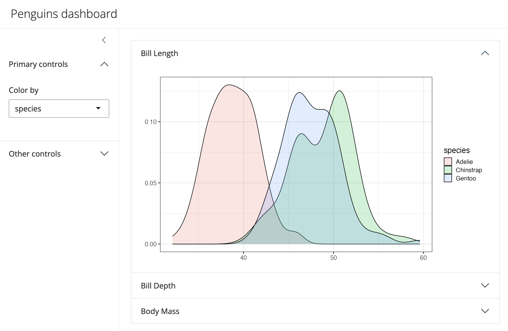
Here is the code to make this app. Notice that it uses accordions in both the sidebar and the main content.
library(shiny)
library(bslib)
library(ggplot2)
data(penguins, package = "palmerpenguins")
# Define UI for random distribution app ----
# Sidebar layout with input and output definitions ----
ui <- page_sidebar(
title = "Penguins dashboard",
sidebar = sidebar(
bg = "white",
accordion(
accordion_panel(
"Primary controls",
varSelectInput(
"color_by", "Color by",
penguins[c("species", "island", "sex")],
selected = "species"
)
),
accordion_panel(
"Other controls",
"Other controls go here"
)
)
),
accordion(
open = c("Bill Length", "About"),
accordion_panel(
"Bill Length",
plotOutput("bill_length")
),
accordion_panel(
"Bill Depth",
plotOutput("bill_depth")
),
accordion_panel(
"Body Mass",
plotOutput("body_mass")
)
)
)
# Define server logic required to draw a histogram ----
server <- function(input, output) {
gg_plot <- reactive({
ggplot(penguins) +
geom_density(aes(fill = !!input$color_by), alpha = 0.2) +
theme_bw(base_size = 16) +
theme(axis.title = element_blank())
})
output$bill_length <- renderPlot(gg_plot() + aes(bill_length_mm))
output$bill_depth <- renderPlot(gg_plot() + aes(bill_depth_mm))
output$body_mass <- renderPlot(gg_plot() + aes(body_mass_g))
}
# Create Shiny app ----
shinyApp(ui = ui, server = server)Similar to page_navbar() and tabsets, the title of the currently active accordion panel can be accessed from reactive contexts as input$<id>, provided an id argument is passed to accordion().
Learn more about accordions on their reference page.
Multi-column apps
A simple way to create an app without a sidebar is page_fillable(). Shiny will scale whatever components you place in page_fillable() to use the available vertical and horizontal space of the app.
By default, Shiny apps place each new component beneath the last, as if it placed each piece of content into a new row. For example, we can use this code to layout three cards:
ui <- page_fillable(
card(card_header("Card 1")),
card(card_header("Card 2")),
card(card_header("Card 3"))
)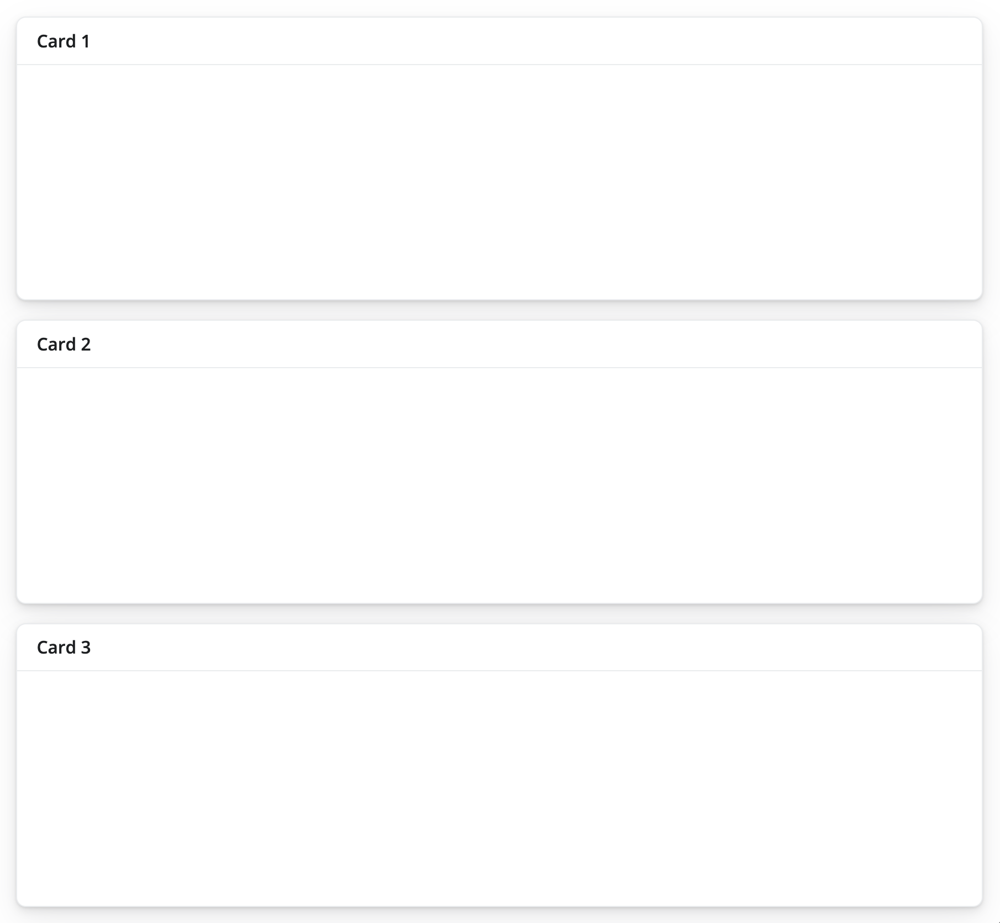
To place components beside each other, as if each appeared in a new column, wrap the components with layout_columns(), like this:
ui <- page_fillable(
layout_columns(
card(card_header("Card 1")),
card(card_header("Card 2")),
card(card_header("Card 3"))
)
)This creates the following layout:
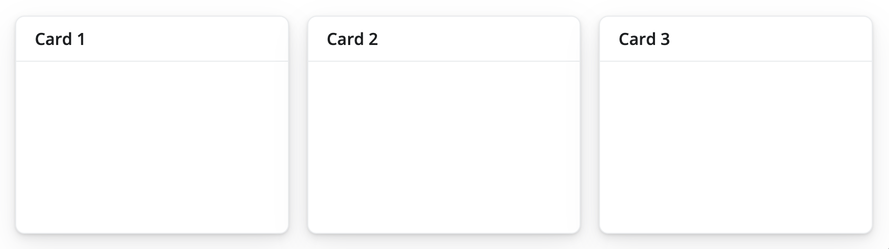
You can mix, match, and nest these methods to create bespoke, grid based layouts. For example, this app uses both row and column-based placement. It also nests rows within a column.
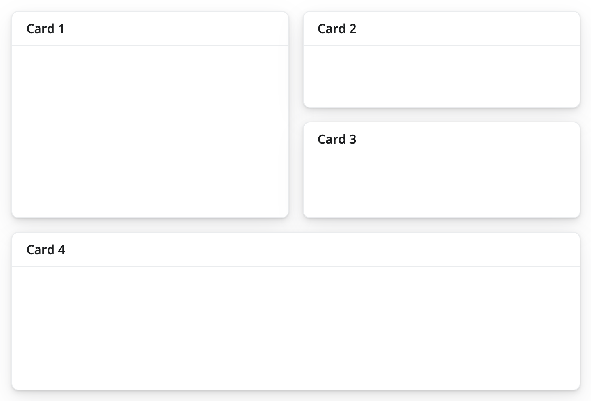
Here is the code that makes the layout. Notice that it calls layout_columns() in a nested fashion. It also uses a col_widths argument. Let’s look at col_widths next.
ui <- page_fillable(
layout_columns(
card(card_header("Card 1")),
layout_columns(
card(card_header("Card 2")),
card(card_header("Card 3")),
col_widths = c(12, 12)
)
),
card(card_header("Card 4"))
)Column widths
If no col_widths are specified, layout_columns divides space evenly among the UI elements in a row. A vector of column widths may also be supplied to allocate a given number of units (out of 12) to each element. Consider these units to be relative to the area that layout_columns() spans within the app. layout_columns() will divide the area into 12 and assign widths to columns accordingly.
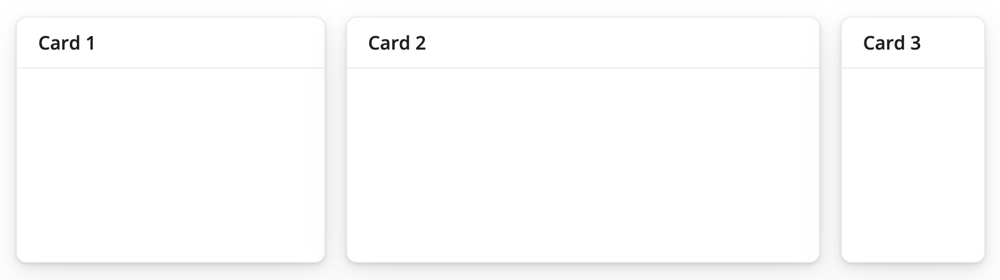
Here is the code that makes the layout:
ui <- page_fillable(
layout_columns(
card(card_header("Card 1")),
card(card_header("Card 2")),
card(card_header("Card 3")),
col_widths = c(4, 6, 2)
)
)And, if elements go beyond the 12 unit mark, they get wrapped onto a new row.
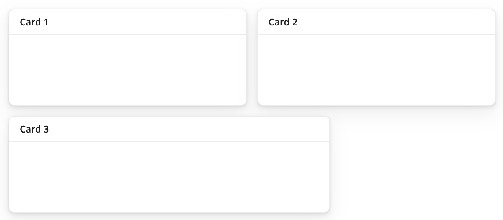
Here is the code that makes the layout:
ui <- page_fillable(
layout_columns(
card(card_header("Card 1")),
card(card_header("Card 2")),
card(card_header("Card 3")),
col_widths = c(6, 6, 8)
)
)Row heights
By default, all row heights are equal, but this can be customized with the row_heights argument (numeric values are interpreted as fractional units, but fixed length units are also supported).
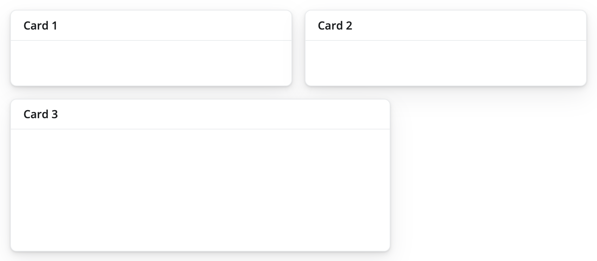
Here is the code that makes the layout:
ui <- page_fillable(
layout_columns(
card(card_header("Card 1")),
card(card_header("Card 2")),
card(card_header("Card 3")),
col_widths = c(6, 6, 8),
row_heights = c(1, 2)
)
)Negative Space
Negative col_widths may also be provided to easily create negative/empty space:
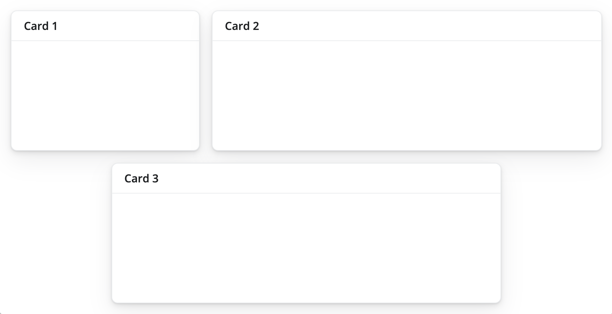
Here is the code that makes the layout:
ui <- page_fillable(
layout_columns(
card(card_header("Card 1")),
card(card_header("Card 2")),
card(card_header("Card 3")),
col_widths = c(4, 8, -2, 8, -2)
)
)
shinyApp(ui, server)Although we don’t show it here, layout_columns() also supports different col_widths and row_heights at different breakpoints(). This is useful for creating responsive layouts that adapt to different screen sizes. To learn more, visit layout_columns().
Filling layout
bslib provides three functions that allow you to layout elements on a sub-dividable 12-column grid, as with page_fillable(). Each resizes the components that you pass it dynamically (or not) as the size of the app changes, to make use of the available space.
page_fixed()places components into a grid that occupies a fixed width of 940 pixels by default. It may assume other widths when Bootstrap’s responsive layout kicks in (e.g., when on a tablet).page_fluid()places components into a grid that always occupies the full width of the web page, and it re-sizes its components dynamically as the width of the page changes.page_fillable()places components into a grid that always occupies the full width and height of the web page, and it re-sizes its components dynamically as the width and height of the page changes.
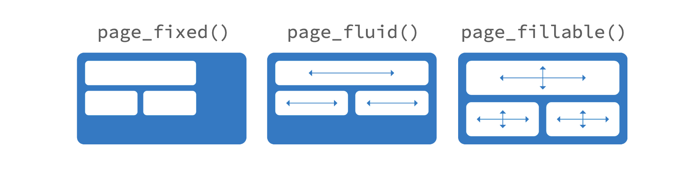
Responsive Layout
The Bootstrap grid system supports responsive CSS, which enables your application to automatically adapt its layout for viewing on different sized devices. Responsive layout includes the following:
- Modifying the width of columns in the grid
- Stacking elements instead of using float wherever necessary
- Resizing headings and text to be more appropriate for devices
Responsive layout is enabled by default for all Shiny page types.
Available breakpoints
Bootstrap 5 includes six default breakpoints, which are customizable via Sass. By default, many column-wise layouts (e.g., layout_columns()) only apply at the sm breakpoint and larger.
| Breakpoint | Class infix | Dimensions |
|---|---|---|
| Extra small | None | < 576 px |
| Small | sm |
< 768 px |
| Medium | md |
< 992 px |
| Large | lg |
< 1200 px |
| Extra large | xl |
< 1400 px |
| Extra extra large | xxl |
>= 1400 px |
That said, you can use breakpoints() with layout_columns() to customize column widths for different screen sizes:
layout_columns(
card(card_header("Card 1"), "foo"),
card(card_header("Card 2"), "foo"),
card(card_header("Card 3"), "foo"),
col_widths = breakpoints(
sm = c(4, 4, 4),
md = c(3, 3, 6),
lg = c(-2, 8, -2)
)
)See the Bootsrap website for more details.